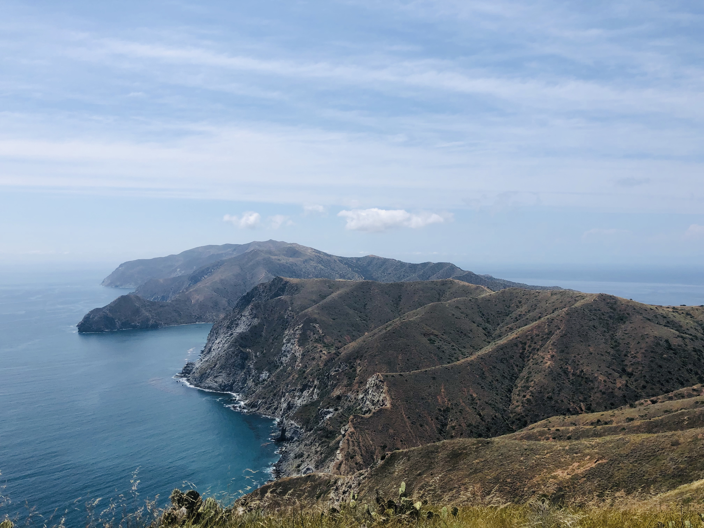

This section of the trail is shown in red on the map. Day one starts with a short hike through the city of Avalon until you get to the trailhead.
Then, the switchbacks start. As you hike along the trail, you might get lucky and see some bison! They are all over Catalina island.
Once we got to Blackjack Campground, we set up our tent and made a dehydrated meal for dinner. We hiked a little further up the trail to see the sun set over the western side of the island (image shown on the right).
Hiking the Trans Catalina Trail
4 days, 46.6 miles
Day 1: Avalon to Blackjack Campground
11 miles, 1500 ftDay 2: Blackjack to Two Harbors
13 miles, 1300 ft
Shown in yellow on the map. This was a long, tough hiking day - but the views were amazing! We left Blackjack Campground and started to head downhill (this is misleading - you will have to go back up!).
Eventually, we got to Little Harbor (seen in the background of the image to the right), and stopped there for lunch. This is another optional campsite if you wanted to take a shorter hike. We kept going to Two Harbors.
By the time we got there, we were so exhausted. We jumped in the ocean to clean off and then took a much needed nap.
By the time we got there, we were so exhausted. We jumped in the ocean to clean off and then took a much needed nap.
Day 3: Two Harbors to Parsons Landing (Optional hike to Starlight Beach)
6.5 miles, 1700 ft. (Additional 8.6 miles round trip to Starlight Beach)

Shown in blue on the map. Day 3 starts with lots of elevation gain in a short amount of time. But, you get to the highest point on the island, which is where this photo was taken.
The trail gets kind of steep once you start to go downhill. If I did it again, I would bring hiking poles.
The campsite at Parsons Landing was my favorite of the trip. Our site was right on the beach, in the sand. Once we set up camp, we continued on to Starlight Beach to the official end of the island.
The campsite at Parsons Landing was my favorite of the trip. Our site was right on the beach, in the sand. Once we set up camp, we continued on to Starlight Beach to the official end of the island.
Day 4: Parsons Landing to Two Harbors
7.5 miles, 200 ft Shown in green on the map. Day 4 was the easiest day by far. The hike back to Two Harbors from Parsons landing is quite enjoyable. It's relatively flat and you get great views of the ocean the whole time.
Shown in green on the map. Day 4 was the easiest day by far. The hike back to Two Harbors from Parsons landing is quite enjoyable. It's relatively flat and you get great views of the ocean the whole time.
Once we got back to Two Harbors, we enjoyed burgers and drinks while we waited for our ferry back to Los Angeles. What a great trip!